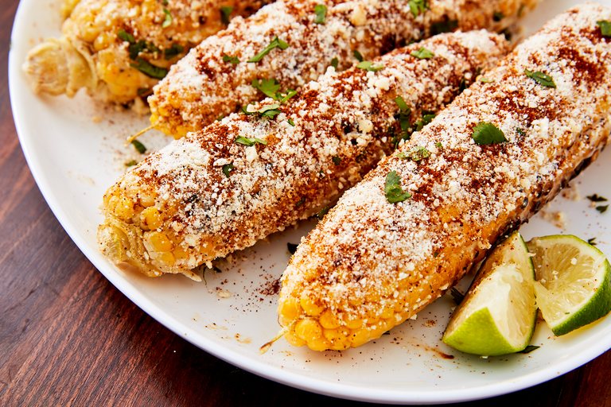

Elote

Top warm, grilled corn on the cob with a delicious Mexican-inspired
spread. The spicy-creamy topping is also delicious on fresh corn
that's been steamed in your kitchen.
Ingredients:
- 4 ears corn, grilled
- 1/3 c mayo
- 1/3 c Mexican crema
- 2 cloves of minced garlic
- juice of 1 lime
- 1/2 c grated cotija cheese
- ancho chile powder to taste
Steps:
-
Stir mayo, crema, garlic, lime juice in a small bowl. Add cotija and
chili powder to taste.
-
Spread elote mixture onto warm ears of corn and sprinkle with some
more ancho chile / cotija! Best when served warm!!